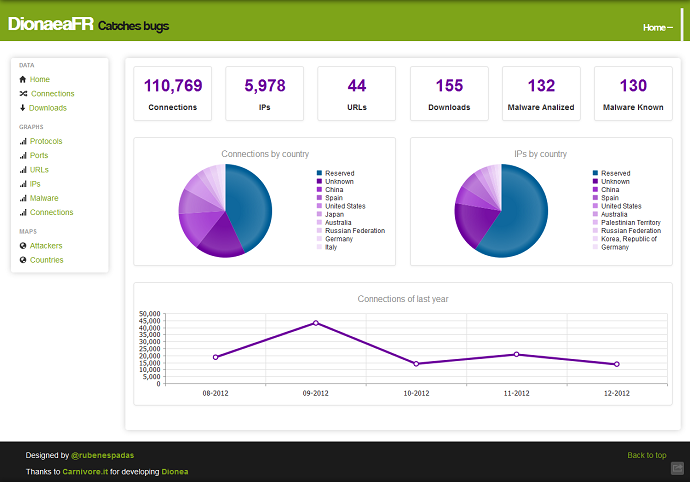
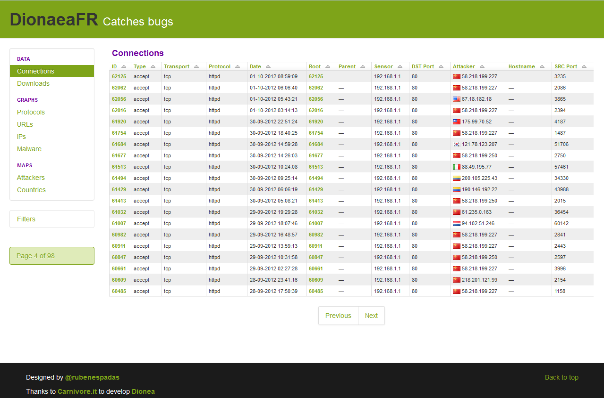
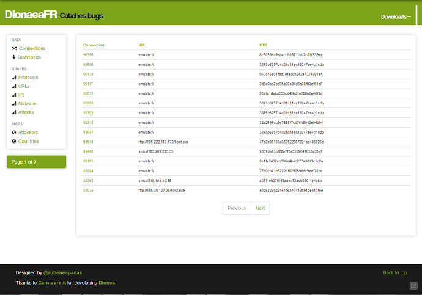
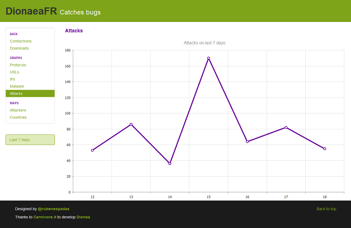

Front Web to Dionaea low-interaction honeypot.
- 
-

- 
- 
- 
-

Technologies:
- Python 2.7.3
- Django 1.4
- Jquery 1.7.2
- Bootstrap Framework 2.1.1
- jVectorMap 1.0
- Kendo-UI v2011.3.1129
- SQLite3
Requeriment
pip install Django
pip install pygeoip
pip install django-pagination
pip install django-tables2
pip install django-compressor
pip install django-htmlmin
pip install django-filter
django-tables2-simplefilter:
https://github.com/benjiec/django-tables2-simplefilter
python setup.py install
SubnetTree:
git clone git://git.bro-ids.org/pysubnettree.git
python setup.py install
nodejs:
http://nodejs.org/dist/v0.8.16/node-v0.8.16.tar.gz
tar xzvf node-v0.8.16.tar.gz
cd node-v0.8.16
./configure
make
make install
npm install -g less
apt-get install python-netaddr
Install
Download GeoIP and GeoLiteCity:
wget http://geolite.maxmind.com/download/geoip/database/GeoLiteCity.dat.gz
wget http://geolite.maxmind.com/download/geoip/database/GeoLiteCountry/GeoIP.dat.gz
Decompress GeoIP and GeoLiteCity:
gunzip GeoLiteCity.dat.gz
gunzip GeoIP.dat.gz
Move GeoIP and GeoLiteCity to DionaeaFR/DionaeaFR/static:
mv GeoIP.dat DionaeaFR/DionaeaFR/static
mv GeoLiteCity.dat DionaeaFR/DionaeaFR/static
Run server:
python manage.py collectstatic
python manage.py runserver 0.0.0.0:8000
Access to http://YOUR_IP:8000 in browser.
Changelog
- Add transport, type and protocol filters in connections table.
- Add Attacks graph last 7 days.
- Add less support
- Add HTML minify
- Add menu icons
- Other visuals changes
- Add home panel
- Add country name in tooltips
- Add Top 10 Ports Graph
- Add ANTIVIRUS_VIRUSTOTAL variable in settings.py
- Deactive minify by default
- Restructure directories
- Fixed Graphs
- Refactoring code
- New filters system
- Fixed mysql_command
- Add refresh interval in graphs